GERAÇÕES DO K-POP
O K-pop, como fenômeno global, evoluiu ao longo dos anos, com várias gerações de grupos e artistas marcando diferentes fases da indústria. As gerações do K-pop são geralmente classificadas da seguinte forma:
Primeira Geração (1996-2003):
A primeira geração de K-pop surgiu no final dos anos 90 e início dos anos 2000. Nessa época, a indústria ainda estava em seus estágios iniciais, mas já começou a ganhar atenção internacional.
Grupos Representativos: H.O.T., Sechs Kies, S.E.S., Fin.K.L, g.o.d, Shinhwa.
Características: A música era influenciada pelo pop ocidental, com um forte foco em grupos masculinos e femininos. As músicas eram mais simples, mas as coreografias e o conceito de "idol" começaram a ser definidos.
Inovações: O termo "idol" começou a ser usado, e as empresas começaram a focar na formação de grupos com membros que possuíam múltiplas habilidades, como canto, dança e aparência.
2. Segunda Geração (2004-2012)
A segunda geração de K-pop marcou o crescimento exponencial da popularidade da música coreana, tanto na Ásia quanto internacionalmente. Muitos dos grupos dessa era ainda são extremamente populares.
Grupos Representativos: TVXQ, Super Junior, Girls' Generation (SNSD), BIGBANG, Wonder Girls, 2NE1, SHINee, KARA, 2PM.
Características: A produção musical ficou mais polida e a estética dos vídeos aumentou. Surgiram mais grupos com conceitos distintos e músicas com influências de gêneros variados como R&B, hip-hop e eletrônico.
Inovações: A popularização do K-pop em países fora da Ásia, especialmente com o sucesso de "Sorry, Sorry" (Super Junior) e "Gee" (Girls' Generation), além do primeiro grande sucesso global de "Nobody" (Wonder Girls) nos Estados Unidos.
3. Terceira Geração (2013-2017)
A terceira geração foi marcada pela globalização do K-pop, com grupos ganhando uma enorme base de fãs internacionais e a indústria se tornando uma potência global. A diversidade de sons e estilos aumentou, com maior ênfase nas plataformas digitais.
Grupos Representativos: BTS, EXO, BLACKPINK, TWICE, Red Velvet, GOT7, SEVENTEEN, NCT, MONSTA X.
Características: A globalização foi o foco principal, com o K-pop atingindo novos mercados, especialmente os Estados Unidos e a Europa. Grupos dessa geração começaram a ser mais diversificados, com uma maior ênfase em redes sociais e plataformas de streaming. Além disso, as coreografias tornaram-se ainda mais complexas.
Inovações: O uso de mídias sociais como YouTube, Twitter e Instagram ajudou a conectar os artistas com fãs ao redor do mundo. Além disso, as colaborações com artistas internacionais, como BTS com Halsey ou BLACKPINK com Lady Gaga, marcaram essa era.
4. Quarta Geração (2018-presente)
A quarta geração é caracterizada pela inovação tecnológica, diversificação de estilos e uma indústria ainda mais globalizada. Grupos da quarta geração têm maior presença nas plataformas digitais, e as interações com os fãs são ainda mais diretas.
Grupos Representativos: Stray Kids, ITZY, TXT, ATEEZ, ENHYPEN, TREASURE, (G)I-DLE, SEVENTEEN, STAYC, IVE, NewJeans.
Características: O K-pop da quarta geração continua a expandir sua popularidade global, com foco em conceitos inovadores e músicas que misturam uma variedade de gêneros, como EDM, hip-hop, pop e até música alternativa. Grupos da quarta geração também têm grande presença no TikTok e em outras plataformas de streaming, usando novas tecnologias como realidade aumentada (AR) e hologramas.
Inovações: Maior interação com os fãs através de plataformas como Weverse e V LIVE, com ênfase no conteúdo digital. Além disso, a quarta geração tem visto um aumento de grupos que promovem a diversidade, com vários membros de diferentes países, especialmente da Ásia e do Ocidente.
Primeira geração:
 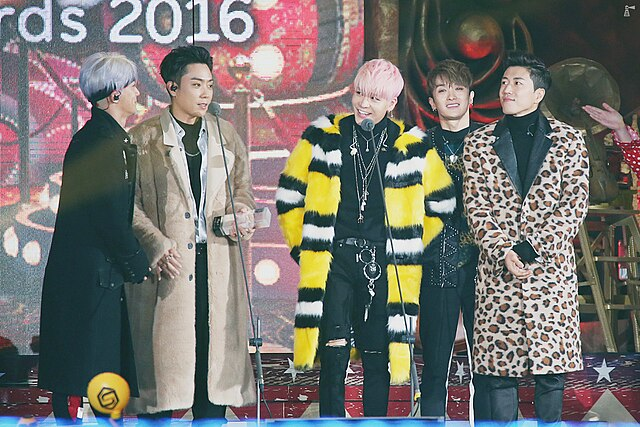
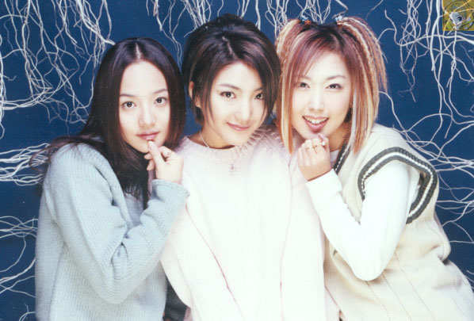
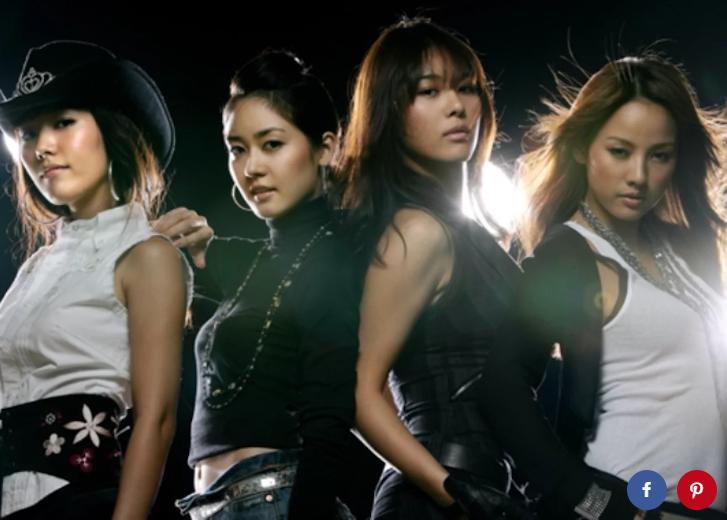
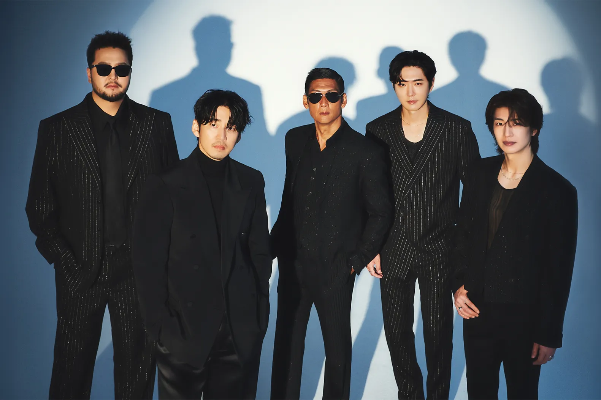
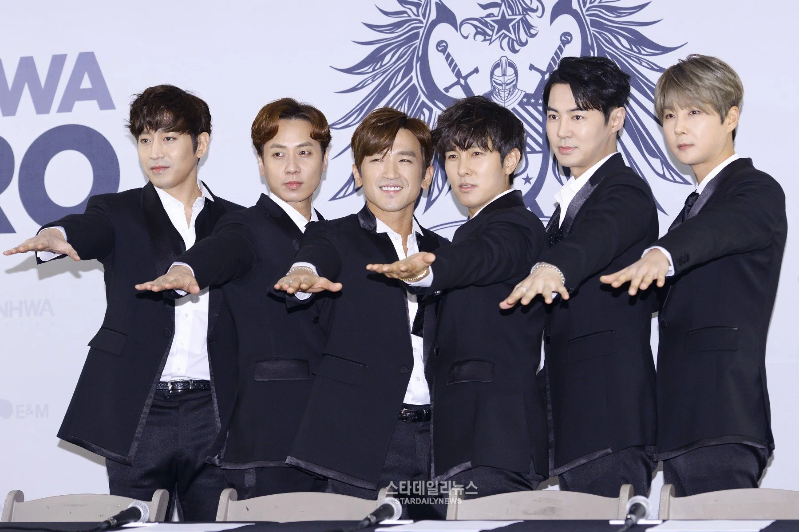
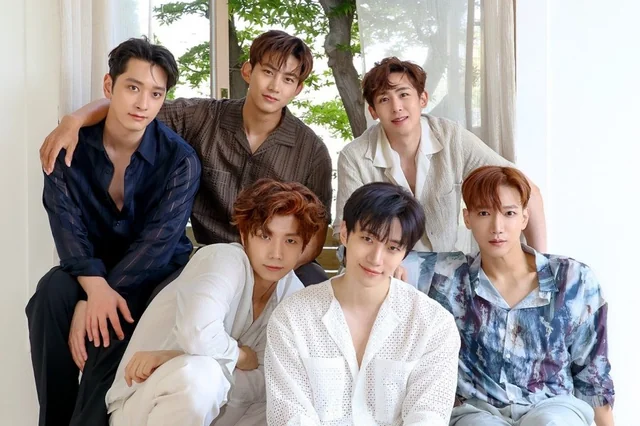
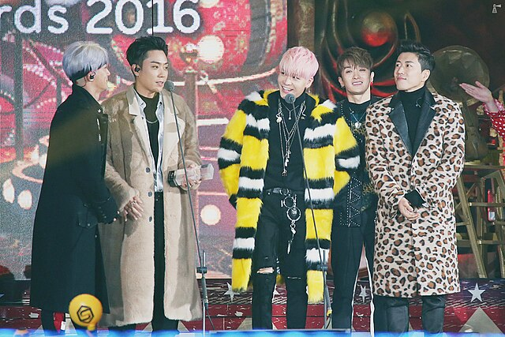
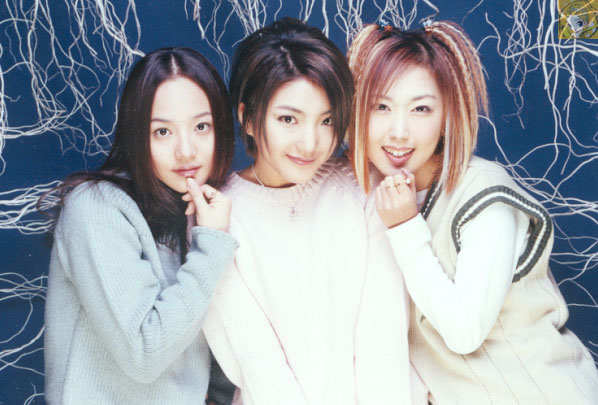
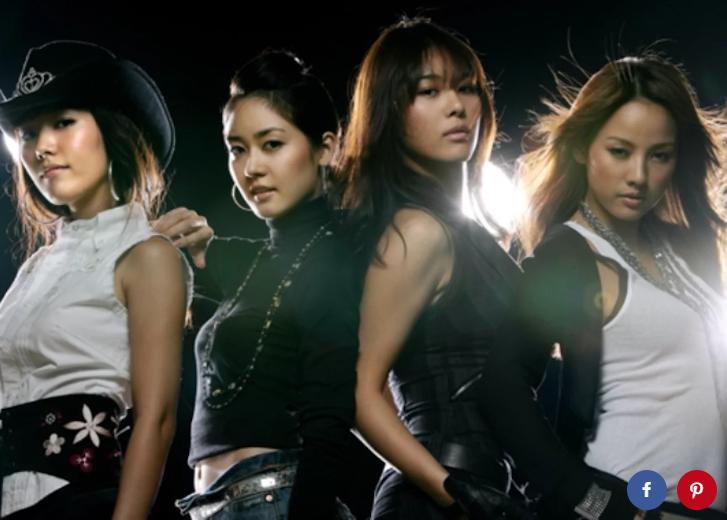
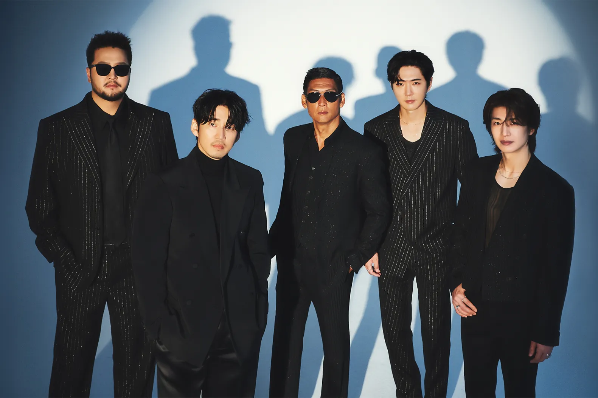
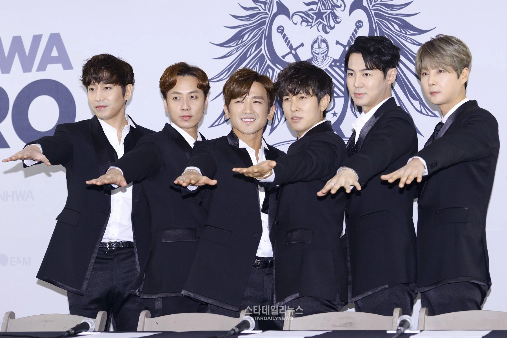
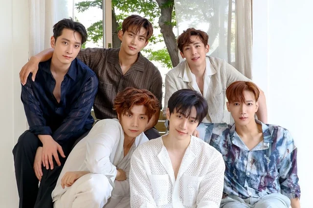
Segunda Geração:
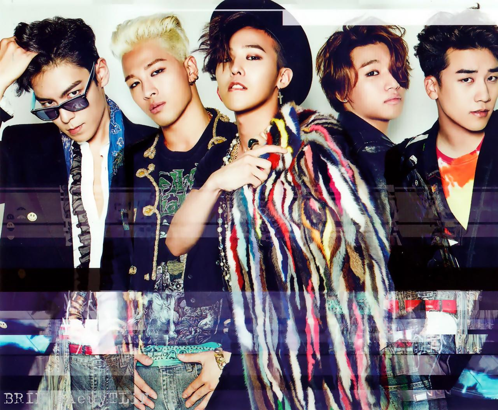
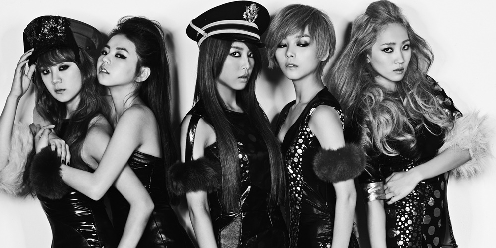 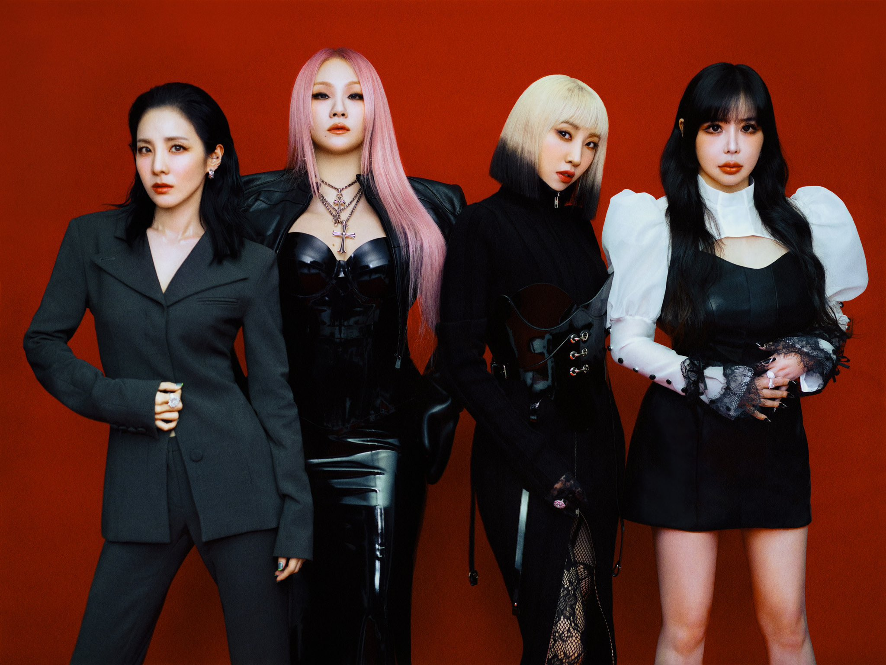